Hướng dẫn sử dụng MCAH
Tài liệu này giải thích cách dùng từng phần của MCAH theo đúng luồng công việc của công ty môi giới thuyền viên: lập hồ sơ thuyền viên, tìm người cho vị trí chủ tàu cần, gửi hồ sơ, chốt người lên tàu, rồi làm hợp đồng và thu tiền chủ tàu. Bấm nút công việc ở thanh trên để làm nổi những phần liên quan đến bạn.
MCAH là gì?
MCAH là phần mềm quản lý cho công ty cung ứng (môi giới) thuyền viên. Mọi việc của một vị trí chủ tàu cần người đi qua một luồng, dữ liệu nhập ở bước đầu được dùng lại tới bước cuối:
Ứng dụng chạy trên trình duyệt, dùng được trên máy tính và điện thoại. Chỉ nhân viên công ty đăng nhập; thuyền viên và chủ tàu không có tài khoản. Chủ tàu nhận hồ sơ qua email như bình thường.
Mỗi mục có bảng Ai làm được: việc gì, cần quyền nào (đúng tên quyền trong Quản trị → Vai trò và quyền), và nhóm công việc thường làm việc đó. Bấm một nhóm ở thanh trên để làm mờ các mục không liên quan.
Vai trò & phân quyền
MCAH không gắn sẵn vai trò cố định, trừ Quản trị viên có mọi quyền. Công ty tự tạo vai trò (ví dụ Môi giới viên, Kế toán, Trưởng phòng) và tích từng quyền trong bảng. Mỗi tài khoản có một vai trò; vai trò quyết định menu nào hiện ra và thao tác nào bấm được, cả trên giao diện lẫn ở máy chủ.
Bảng quyền có 12 mục, 48 quyền, chia ba nhóm Hồ sơ, Vận hành, Hệ thống. Bốn nhóm công việc dùng trong tài liệu này chỉ để đọc cho dễ; quyền thật là quyền công ty đã tích cho vai trò của bạn.
| Nhóm công việc | Thường được cấp |
|---|---|
| Môi giới | Thuyền viên, Đối tác và Tàu (xem, thêm, sửa), Cơ hội (đủ quyền), Chuyến tàu, Hợp đồng (tạo, sửa nháp, gửi duyệt) |
| Duyệt & quản lý | Duyệt và từ chối hợp đồng, kết thúc hợp đồng, xem số cả công ty trên Tổng quan, đặt mục tiêu tháng |
| Kế toán | Yêu cầu thanh toán: sửa số tiền, duyệt, đánh dấu đã gửi, ghi nhận đã thu |
| Quản trị | Tài khoản, Vai trò và quyền, Danh mục |
Phạm vi dữ liệu
Sáu mục Thuyền viên, Bản xuất, Cơ hội, Chuyến tàu, Hợp đồng, Yêu cầu thanh toán có thêm phạm vi: Tất cả hoặc Do mình tạo. Chọn Do mình tạo thì người đó chỉ thấy và làm trên bản ghi do chính mình tạo.
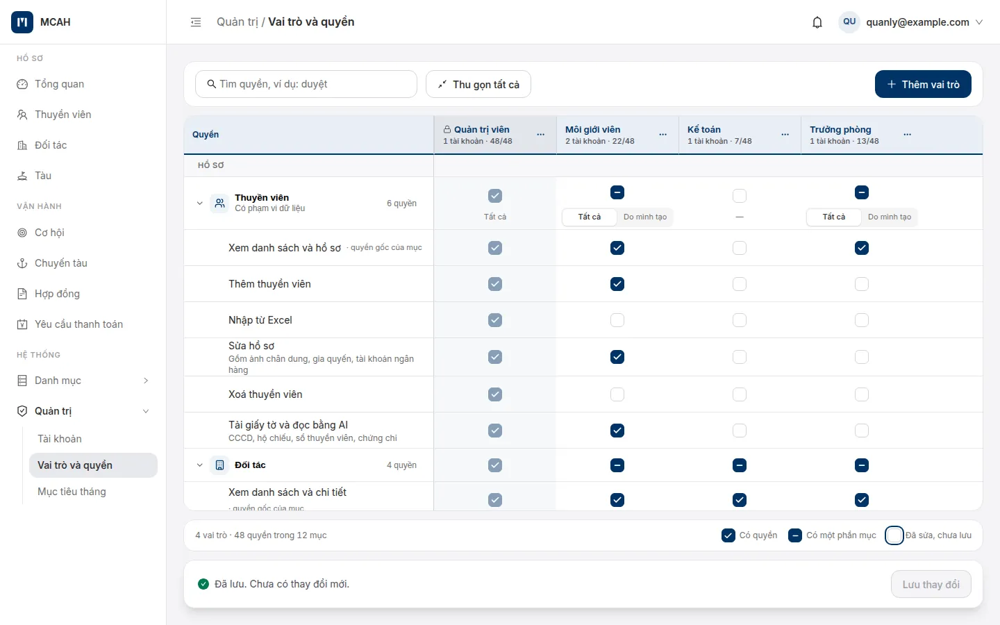
Tích bất kỳ quyền nào của một mục thì tự có quyền Xem của mục đó. Người duyệt yêu cầu thanh toán phải khác người vừa sửa nó. Quyền đổi có hiệu lực từ lần tải trang tới của người được đổi.
Đăng nhập & tài khoản
- Quản trị viên thêm tài khoản cho bạn ở Quản trị → Tài khoản. Hệ thống gửi thư mời tới email của bạn.
- Mở thư, bấm đường dẫn, đặt mật khẩu theo các yêu cầu hiện trên trang Đặt mật khẩu.
- Đăng nhập bằng email và mật khẩu. Nhập sai nhiều lần liên tiếp thì hệ thống tạm chặn, chờ vài phút rồi thử lại.
Đăng xuất: bấm email của bạn ở góc trên bên phải, chọn Đăng xuất. Tài khoản chưa được gán vai trò sẽ thấy trang "Chưa có vai trò" và cần báo quản trị viên.
Điều hướng & cách dùng chung
Thanh bên trái chia ba nhóm: Hồ sơ (Tổng quan, Thuyền viên, Đối tác, Tàu), Vận hành (Cơ hội, Chuyến tàu, Hợp đồng, Yêu cầu thanh toán) và Hệ thống (Danh mục, Quản trị). Menu chỉ hiện mục bạn có quyền xem. Nút ☰ ở thanh trên thu gọn thanh bên.
Trang danh sách
Ô tìm kiếm, tab hoặc ô chọn trạng thái, nút Bộ lọc, nút thêm mới ở góc phải. Bấm một dòng để mở chi tiết.
Trang chi tiết
Thẻ đầu trang tóm tắt bản ghi và các nút việc chính; bên dưới là các tab. Tab Tổng quan có mục lục nhóm thông tin bên trái, kèm số ô đã điền.
Form thêm mới
Nút lưu luôn bấm được; thiếu ô bắt buộc thì lỗi hiện ngay dưới ô. Nút Lưu & thêm … khác lưu xong để form trống cho bản ghi tiếp theo.
Form sửa
Nút Lưu thay đổi sáng lên khi có thay đổi; ô đã đổi có chip "Đã sửa". Rời trang khi chưa lưu, app hỏi lại trước.
Ở Tổng quan, Chuyến tàu, Hợp đồng, Yêu cầu thanh toán và Mục tiêu tháng, thanh trên có link Hướng dẫn mở hướng dẫn chi tiết của phần đó. Chuông bên cạnh là thông báo.
Tổng quan (Dashboard)
Trang đầu tiên sau khi đăng nhập, vừa một màn hình máy tính. Nhìn 5 giây là biết tháng này đang đạt hay chậm, và hôm nay có việc gì đã quá hạn. Màu đỏ chỉ dành cho việc quá hạn hoặc đang chậm.
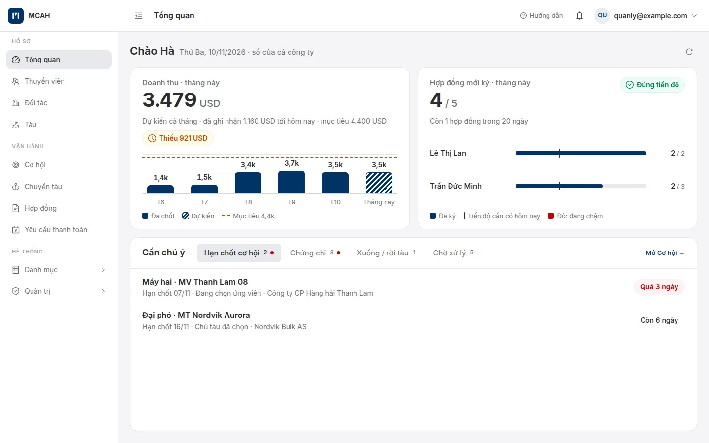
Doanh thu · tháng này
Phần chênh lệch giữa tiền thu chủ tàu và tiền trả thuyền viên, của hợp đồng hiệu lực hoặc đã kết thúc. Cột tháng này là số dự kiến, so với mục tiêu.
Hợp đồng mới ký · tháng này
Đếm khi hợp đồng được duyệt lần đầu. Nhãn Đạt mục tiêu, Đúng tiến độ hoặc Chậm tiến độ; quản lý thấy thêm một dòng cho từng người.
Cách tính
- Hợp đồng mới ký được đếm một lần, vào tháng của ngày duyệt lần đầu. Đưa về Nháp rồi duyệt lại không đếm thêm.
- Vạch đứng trên thanh là tiến độ cần có tới hôm nay (ví dụ ngày 4 của tháng 30 ngày, mục tiêu 3 → cần 0,4). Thanh đỏ khi số đã ký còn nằm trước vạch. Phần gạch chéo (chỉ ở màn môi giới viên) là hợp đồng sắp vào: chờ duyệt, nháp, chủ tàu đã chọn.
- Doanh thu: khoản hằng tháng chia theo số ngày hợp đồng nằm trong tháng (chênh 1.000 USD/tháng, bắt đầu 16/11 → tháng 11 được 500 USD); khoản một lần tính trọn vào tháng bắt đầu. Hợp đồng nháp, chờ duyệt, bị từ chối chưa tính. Sửa ngày rồi duyệt lại thì các tháng cũ được tính lại.
- Tính cho ai: hợp đồng chốt từ cơ hội tính cho người phụ trách cơ hội; hợp đồng của chuyến tạo tay tính cho người tạo hợp đồng.
| Tab Cần chú ý | Gồm | Đỏ khi |
|---|---|---|
| Hạn chốt cơ hội | Cơ hội đang mở có hạn chốt trong 7 ngày tới hoặc đã qua | Đã qua hạn chốt |
| Chứng chỉ | Hết hạn trong 60 ngày tới hoặc đã hết, trừ khi đã có bản mới | Đã hết hạn |
| Xuống / rời tàu | Sắp xuống tàu trong 30 ngày; ngày rời dự kiến trong 30 ngày hoặc đã qua mà chưa ghi rời | Quá ngày rời dự kiến |
| Chờ xử lý / Việc của bạn | Hợp đồng chờ duyệt, bị từ chối, nháp; yêu cầu thanh toán cần duyệt, cần gửi, quá hạn | Bị từ chối, quá hạn thanh toán |
Trang tự mở tab đầu tiên có việc quá hạn. Bấm dòng có nhãn Quá n ngày để mở thẳng bản ghi đó. Quản lý thấy số cả công ty, mỗi môi giới viên một dòng (người chậm tô đỏ); môi giới viên chỉ thấy số của mình và tab cuối là Việc của bạn.
Thuyền viên
Mỗi thuyền viên có một hồ sơ dùng lại cho mọi cơ hội, chuyến tàu, hợp đồng. Trạng thái Đang trên tàu / Ở bờ tự đổi theo chuyến tàu, không cần sửa tay.
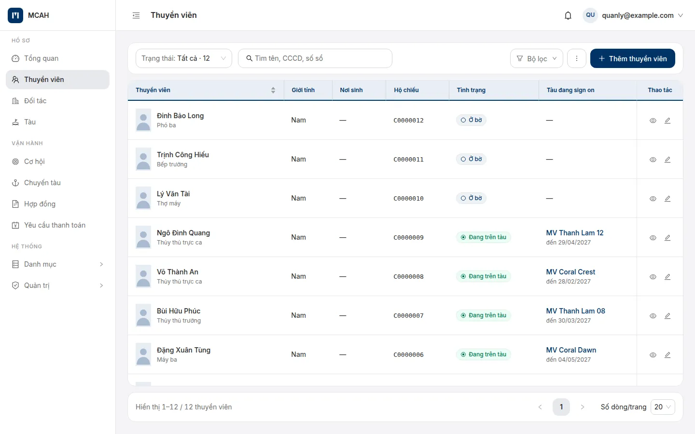
Thêm thuyền viên
- + Thêm thuyền viên mở form theo nhóm: thông tin chung, giấy tờ tuỳ thân, thể chất, liên hệ, ngân hàng & BHXH, gia quyến, học vấn.
- Ở form, có thể quét CCCD, hộ chiếu hoặc sổ thuyền viên để AI điền sẵn các ô; app hỏi có lưu ảnh vừa quét vào Giấy tờ không.
- Nhiều người một lúc: menu ⋮ trên danh sách → nhập từ Excel. Tải file mẫu, điền, chọn file rồi nhập.
Hồ sơ thuyền viên
Thẻ đầu trang có chức danh, tàu và chuyến hiện tại, nút gọi, nhắn, gửi mail nhanh. Bên dưới là năm tab:
| Tab | Có gì |
|---|---|
| Tổng quan | Bảy nhóm thông tin, mỗi nhóm có số ô đã điền để biết hồ sơ còn thiếu gì |
| Giấy tờ | Mọi giấy tờ, chứng chỉ, hạn và trạng thái (xem mục Giấy tờ & AI đọc giấy) |
| Đi tàu | Dòng thời gian các chuyến, tổng thời gian trên tàu, các khoảng ở bờ; nút Tạo chuyến |
| Hợp đồng | Các hợp đồng của thuyền viên này |
| Lịch sử | Ai đã sửa gì, khi nào |
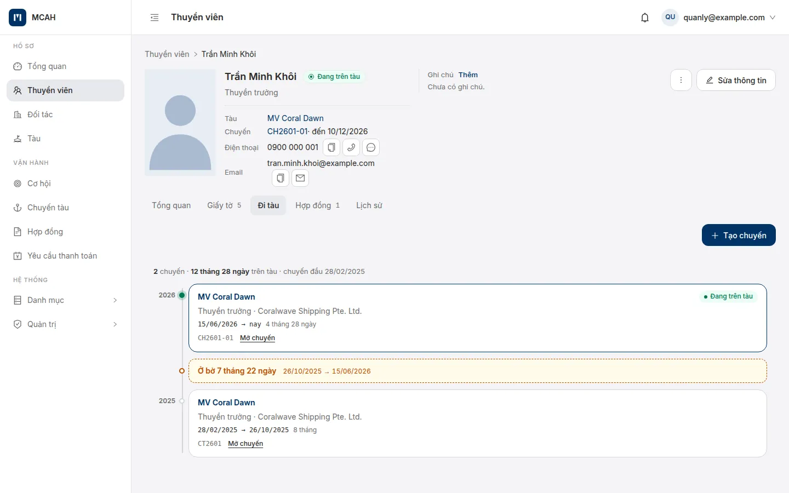
Menu ⋮ ở đầu hồ sơ có Tạm ngưng thuyền viên (người tạm ngưng không chốt, không tạo chuyến được), Kích hoạt lại và Xoá thuyền viên.
Giấy tờ & AI đọc giấy
Tab Giấy tờ của hồ sơ gom mọi giấy của thuyền viên vào một bảng: tên, loại, số, ngày cấp, ngày hết hạn, trạng thái. Chip lọc theo nhóm: Tuỳ thân, Bằng (COC), Chứng chỉ (COP), Y tế, Khác. Nút tải cả bộ cho ra một file .zip.
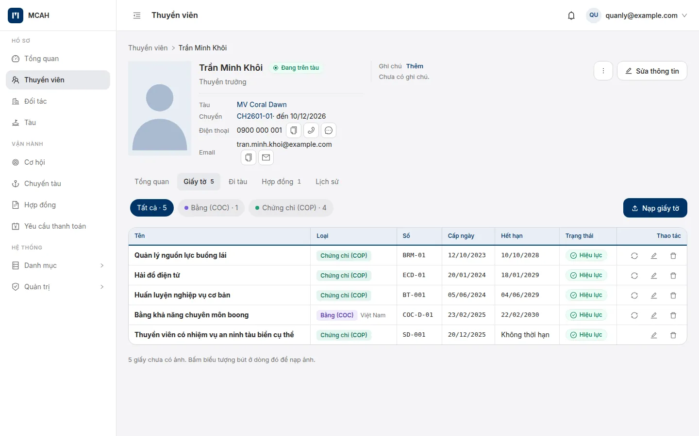
Nạp giấy tờ bằng AI
- Bấm Nạp giấy tờ, chọn ảnh chụp hoặc file PDF của giấy.
- AI đọc ngay khi chọn tệp và điền sẵn các ô: loại giấy, số, ngày cấp, ngày hết hạn, nơi cấp.
- Kiểm tra từng ô so với bản gốc, sửa nếu cần. Với giấy tuỳ thân (CCCD, hộ chiếu, sổ thuyền viên), app hiện các ô hồ sơ sẽ đổi (cũ → mới) để bạn chọn ô nào cập nhật.
- Bấm lưu. Giấy vào bảng, ảnh gốc lưu kèm.
Ô không đọc được thì để trống, AI không đoán. Ảnh quá mờ thì nhập tay. Nếu máy chủ chưa cấu hình AI, tệp vẫn được lưu kèm hồ sơ và app báo "AI chưa được cấu hình"; các phần khác dùng bình thường.
Nạp bản mới của một giấy tạo dòng mới, dòng cũ chuyển thành "Bản cũ". Xoá giấy là xoá mềm: tệp còn giữ 180 ngày rồi mới bị dọn khỏi ổ đĩa.
Đối tác
Danh bạ chủ tàu và các công ty đối tác: tên công ty (tiếng Việt và tiếng Anh), mã số thuế, logo, liên hệ công ty, danh sách người liên hệ và các tàu sở hữu. Tên đối tác hiện ở mục "Nộp cho" của bộ hồ sơ và trên danh sách tàu.
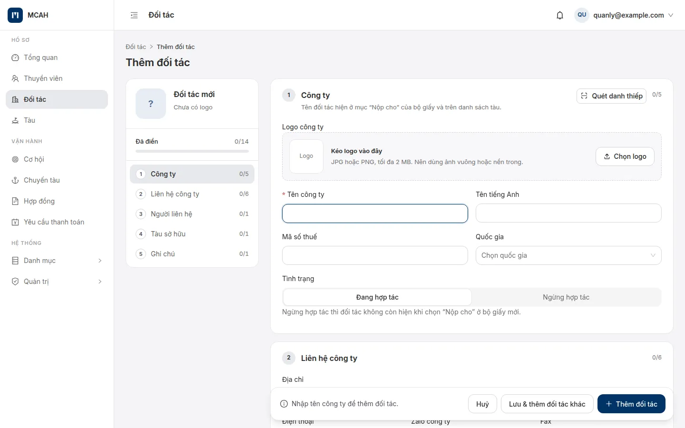
Quét danh thiếp và mã QR
- Quét danh thiếp: chụp hoặc chọn ảnh danh thiếp, AI điền họ tên, chức vụ, email, điện thoại của người liên hệ. Kiểm tra rồi lưu.
- Quét mã QR kết bạn Zalo, WhatsApp, WeChat hoặc LINE của người liên hệ để lưu đường liên lạc. Mã QR chỉ chứa đường dẫn kết bạn nên app lưu đường dẫn đó.
Email của người liên hệ chính là địa chỉ mặc định khi gửi hồ sơ cho chủ tàu (mục Gửi chủ tàu).
Tàu
Hồ sơ từng con tàu: tên, tên cũ, số IMO, Call Sign, MMSI, loại tàu, cờ quốc gia, năm đóng, thông số, máy và thiết bị, chủ tàu và đơn vị quản lý. Tên tàu nên ghi đúng như trên sổ thuyền viên để AI khớp được chuyến đi tàu.
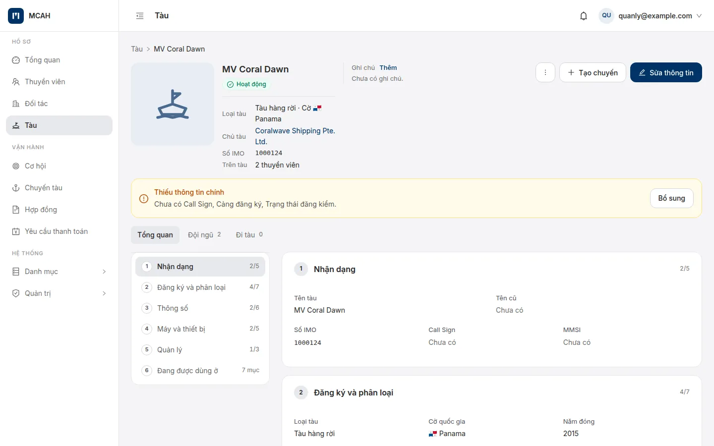
Tra tàu theo số IMO
- Ở form thêm tàu, nhập số IMO (7 chữ số) rồi tra cứu.
- App lấy thông tin tàu từ nguồn bên ngoài và hiện khung Thông tin thông minh: từng trường lấy về đặt cạnh giá trị đang có.
- Ô đang trống được chọn sẵn; ô khác giá trị hiện tại để bạn quyết định. Bấm áp dụng, kiểm tra rồi Thêm tàu.
IMO đã có trong hệ thống thì app báo trùng và mời mở tàu đã có. Tra cứu cần máy chủ đã nối nguồn dữ liệu tàu; nếu nguồn không phản hồi, nhập tay như thường.
Trang tàu có tab Đội ngũ (ai đang ở trên tàu trong khoảng thời gian đang xem) và tab Đi tàu; nút Tạo chuyến ở đầu trang.
Cơ hội
Mỗi cơ hội là một vị trí chủ tàu cần người. Chủ tàu cần 6 người cho một tàu thì có 6 cơ hội. Cơ hội có chủ tàu, tàu (chưa rõ cũng được), chức danh, budget theo tháng hoặc cả chuyến, ngày và nơi xuống / rời tàu dự kiến, hạn chốt, người phụ trách.
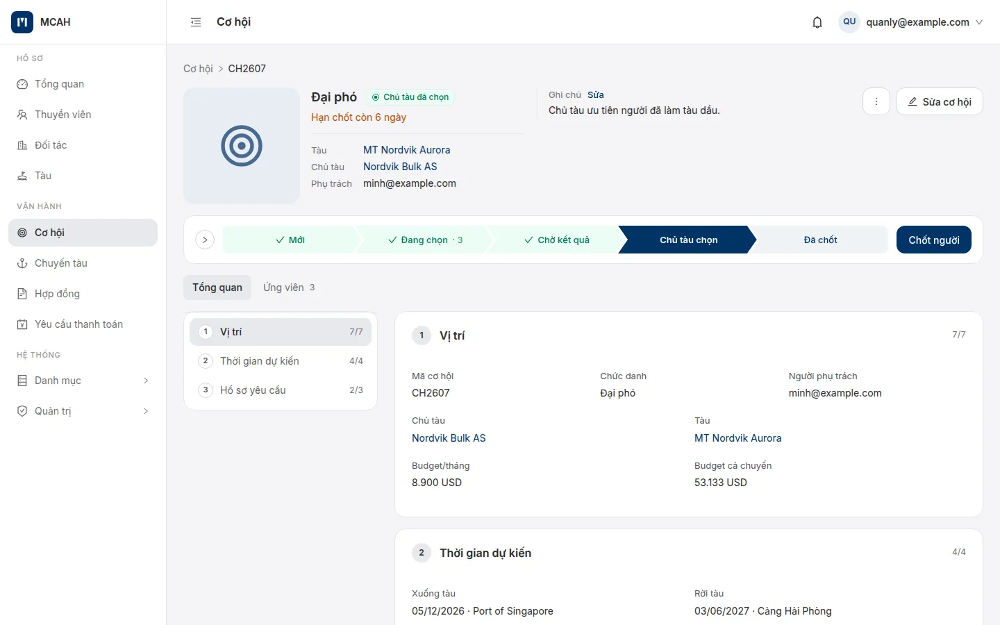
Hồ sơ yêu cầu
Mỗi cơ hội có danh sách thứ ứng viên phải có, chia ba khối: Giấy tờ, Biểu mẫu, Kinh nghiệm (số tháng ở chức danh, số chuyến trên loại tàu). Mỗi mục là Bắt buộc hoặc Nên có, kèm mốc phải còn hạn tới: ngày xuống tàu, ngày rời tàu, ngày rời cộng thêm n tháng, hoặc chỉ cần có. Khi tạo cơ hội, hồ sơ yêu cầu được điền sẵn theo tàu và chức danh.
Thêm ứng viên
Thêm ứng viên mở bảng chọn với bộ lọc đề xuất bật sẵn: đủ giấy bắt buộc, từng làm cho chủ tàu này, rảnh trước ngày, chức danh, loại tàu, quốc tịch, tuổi. Mỗi người có thẻ Hồ sơ (đủ / thiếu giấy, giấy thiếu ở tooltip), Bận và lý do ngắn như "2 chuyến với chủ tàu X".
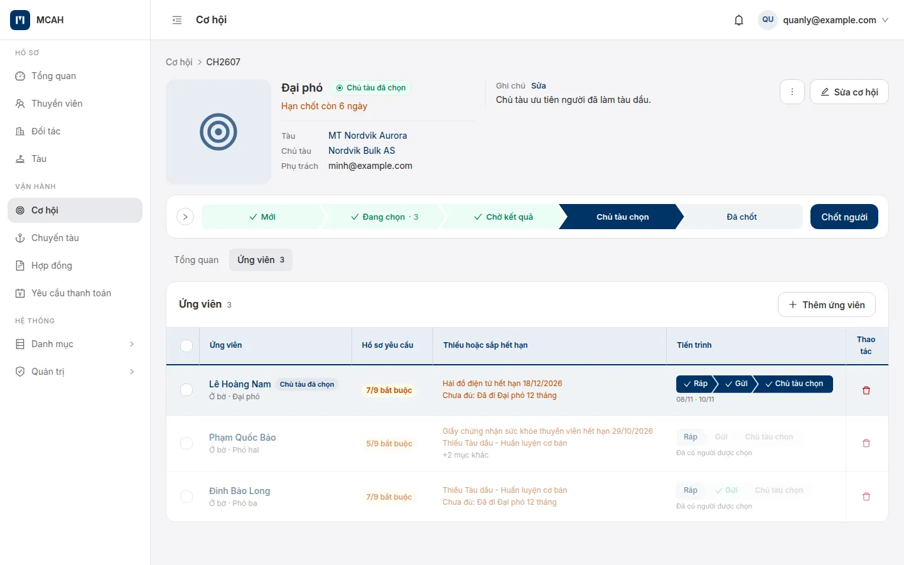
Chủ tàu chọn và chốt người
- Kết quả chủ tàu báo ngoài hệ thống. Bạn gắn nhãn Chủ tàu đã chọn cho một ứng viên để giữ chỗ; các dòng khác mờ đi cho tới khi bỏ nhãn.
- Chốt người: chọn ứng viên, nhập ngày và nơi xuống tàu (không được sau hôm nay). App tạo chuyến Đang trên tàu, tạo hợp đồng nháp, đánh dấu cơ hội Đã chốt và các ứng viên còn lại "Không được chọn".
- Cơ hội không thành thì đóng với lý do (Không thành hoặc Huỷ); mở lại được. Menu ⋮ có Nhân bản và Xoá.
Hạn chốt còn 7 ngày trở xuống hiện nhãn Còn n ngày; đã qua hạn hiện Quá n ngày.
Hồ sơ nộp & gửi chủ tàu
Với từng ứng viên, nút Hồ sơ nộp mở bảng trượt gồm giấy tờ theo hồ sơ yêu cầu (đối chiếu hạn từng giấy, nạp ảnh còn thiếu ngay tại chỗ) và các biểu mẫu phải điền.
Biểu mẫu tự điền
Hộp Điền biểu mẫu lấy dữ liệu từ hồ sơ thuyền viên, cho xem trước đúng file sẽ xuất, sửa ô nếu cần, rồi tải về PDF, Excel hoặc cả hai. Các mẫu đang có:
| Nhóm | Biểu mẫu |
|---|---|
| Tuyển dụng | CV chủ tàu Trung Quốc, KQ Thi tuyển, TB Trúng tuyển |
| Hợp đồng, điều động | Hợp đồng lao động, Quyết định điều động, Quyết định rời tàu, Thanh lý hợp đồng |
| Bảo hiểm, uỷ quyền | Đơn tham gia BHXH, Đơn không tham gia BHXH, Ủy quyền nhận lương, Ủy quyền cá nhân, Thư bảo lãnh |
| Tài chính | Phiếu thu |
Gửi thư cho chủ tàu
- Chọn một hoặc nhiều ứng viên, bấm Gửi. Cửa sổ soạn thư mở ở góc dưới bên phải.
- Đến, Cc, Bcc gợi ý từ người liên hệ của chủ tàu. Tiêu đề và nội dung đã soạn sẵn bằng tiếng Anh, chữ ký là tên người gửi.
- Hồ sơ .zip của từng người tự đính kèm. Thêm tệp khác nếu cần: tối đa 5 tệp, 10 MB mỗi tệp, tổng 20 MB. Bỏ một file .zip nghĩa là bỏ người đó khỏi lần gửi.
- Bấm gửi. Thư đi từ địa chỉ công ty, chủ tàu trả lời thẳng về người gửi. Lần gửi chỉ được ghi nhận khi máy chủ mail đã nhận thư.
Chủ tàu chưa có email liên hệ thì app nhắc thêm email ở trang Đối tác. Máy chủ chưa cấu hình mail (SMTP) thì app báo rõ; báo quản trị viên. Lỗi khi gửi thì cửa sổ thư được giữ để sửa và gửi lại.
Chuyến tàu
Mỗi chuyến là một thuyền viên đi một tàu, từ ngày xuống tới ngày rời. Chuyến ghi sự việc thật; tiền nằm ở hợp đồng. Sửa ngày của chuyến không bao giờ làm đổi tiền.
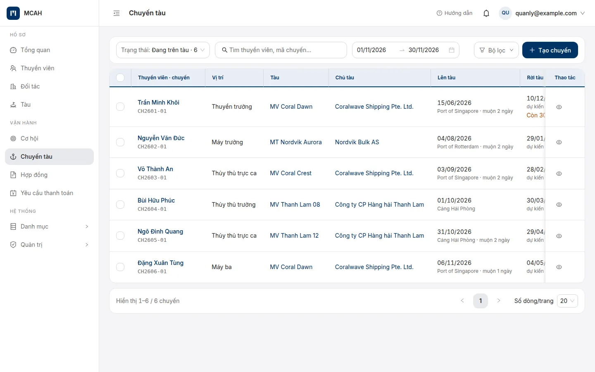
Chuyến từ cơ hội
Sinh ra khi chốt người, kèm hợp đồng nháp. Mã nối từ mã cơ hội: CH2601 → CH2601-01.
Tạo chuyến bằng tay
Bắt buộc chọn lý do: Chủ tàu tự tuyển, Nhập chuyến cũ, Khác. Nhập chuyến cũ thì bật "Chuyến đã kết thúc" để nhập luôn ngày rời. Mã dạng CT2601. Chuyến tạo tay không tự có hợp đồng.
Các thao tác trên chuyến
- Ghi rời tàu: nhập ngày, nơi rời và ghi chú. Chuyến sang Đã rời tàu, thuyền viên về Ở bờ. Hợp đồng không tự đổi (xem Rời tàu, sửa và kết thúc hợp đồng). Thông báo sau đó có lối tắt Mở hợp đồng và Tạo cơ hội tìm người thay. Chọn nhiều chuyến trên danh sách để ghi rời một lần.
- Không có thao tác chuyển tàu: thuyền viên sang tàu khác thì ghi rời chuyến cũ trước, rồi chốt hoặc tạo chuyến mới.
- Đổi ngày rời dự kiến: app giữ ngày gốc để hiện "sớm / muộn n ngày".
- Sửa ngày đã ghi khi nhập nhầm; Huỷ chốt (chuyến từ cơ hội, cơ hội mở lại) hoặc Xoá chuyến (chuyến tạo tay).
Ngày rời dự kiến còn 30 ngày trở xuống hiện nhãn vàng; đã qua mà chưa ghi rời hiện nhãn đỏ. Mỗi thuyền viên chỉ có một chuyến đang trên tàu tại một thời điểm.
Hợp đồng
Hợp đồng là thoả thuận tiền của một chuyến: ngày bắt đầu, ngày kết thúc, tiền phải thu từ chủ tàu và tiền phải trả thuyền viên. Mỗi chuyến có tối đa một hợp đồng. Chuyến tạo bằng tay không tự có hợp đồng; mở chuyến và bấm Tạo hợp đồng.
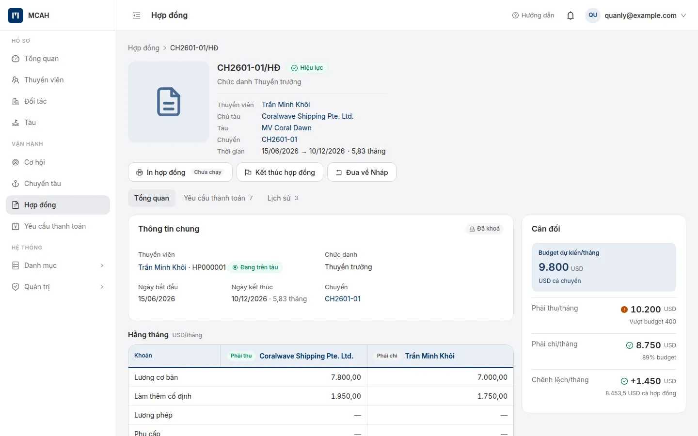
Soạn hợp đồng
- Khoản hằng tháng: lương cơ bản, làm thêm cố định, lương phép, phụ cấp, thưởng, phí dịch vụ.
- Khoản một lần: vé máy bay đi / về, phí visa, khám sức khoẻ, huấn luyện, thưởng hoàn thành hợp đồng.
- Kỳ thanh toán của mỗi phía: ngày chốt sổ (5, 10, 15, 20, 25 hoặc cuối tháng), ngày trả, trả vào tháng sau 1, 2 hay 3 tháng, và gặp thứ Bảy, Chủ nhật thì làm trước hay sau.
Duyệt
- Người soạn bấm Xin duyệt. Hợp đồng sang Chờ duyệt và khoá; rút lại được.
- Người duyệt bấm Duyệt (hợp đồng sang Hiệu lực) hoặc Từ chối kèm lý do.
- Lần duyệt đầu, app sinh đủ các yêu cầu thanh toán từ ngày bắt đầu tới ngày kết thúc.
Hợp đồng Hiệu lực không sửa được gì, kể cả ngày. Muốn đổi ngày hay tiền xem mục Rời tàu, sửa và kết thúc hợp đồng.
Khi thuyền viên còn một hợp đồng khác chưa kết thúc, trùng thời gian. Hộp Chốt báo trước bằng khung vàng "Sẽ không tạo hợp đồng"; người đó vẫn được ghi lên tàu. Kết thúc hoặc rút ngắn hợp đồng cũ, rồi bấm Tạo hợp đồng trên trang chuyến. Ngay lúc chọn ứng viên, người còn hợp đồng đã có nhãn "Đang có hợp đồng …".
Yêu cầu thanh toán
Mỗi yêu cầu thanh toán (bill) là một kỳ thu tiền chủ tàu của một hợp đồng, cắt theo ngày chốt sổ. Kỳ đầu bắt đầu đúng ngày bắt đầu hợp đồng và cộng thêm các khoản một lần; kỳ cuối kết thúc đúng ngày kết thúc. Mã nối từ mã hợp đồng: CH2601-01/HĐ/T1 là kỳ 1 bên thu.
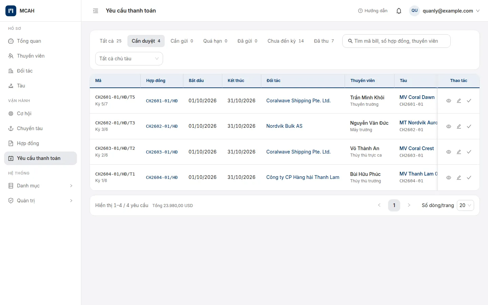
- Kỳ sinh ra ở trạng thái chưa duyệt; tới ngày chốt sổ thì vào tab Cần duyệt.
- Sửa số tiền, dòng điều chỉnh, ghi chú hoặc hạn thanh toán nếu cần (chỉ khi chưa duyệt).
- Duyệt: người duyệt phải khác người sửa gần nhất. Kỳ đã duyệt bị khoá; muốn sửa thì Bỏ duyệt.
- Gửi cho chủ tàu ngoài hệ thống rồi đánh dấu Đã gửi. Thu hồi một kỳ đã gửi đưa nó về chưa duyệt.
- Nhận tiền thì Ghi nhận đã thu với ngày thu; ghi nhầm thì huỷ ghi nhận.
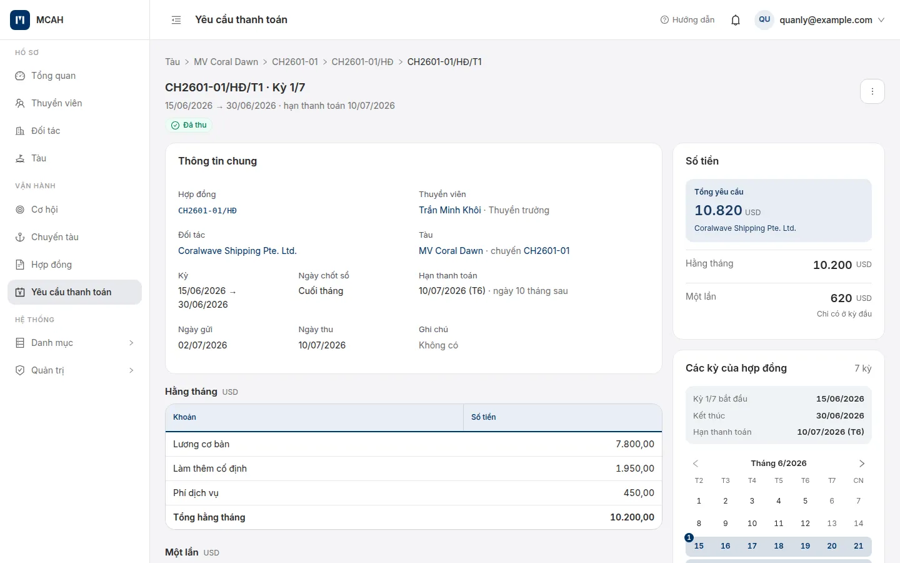
App đang làm phía thu tiền chủ tàu. Phía chi trả lương thuyền viên chưa có.
Rời tàu, sửa và kết thúc hợp đồng
Điều quan trọng nhất: sửa ngày của chuyến không bao giờ đụng tới tiền. Muốn đổi tiền thì sửa hợp đồng, và tiền chỉ đổi khi hợp đồng được duyệt lại.
| Phần | Ghi gì | Đổi khi nào |
|---|---|---|
| Chuyến tàu | Sự việc thật: ai lên tàu nào, ngày xuống, ngày rời | Ghi rời tàu, sửa ngày đã ghi. Đổi trạng thái thuyền viên |
| Hợp đồng | Thoả thuận tiền: ngày bắt đầu, kết thúc, phải thu, phải trả | Chỉ khi đưa về Nháp, sửa và duyệt lại. Ngày chỉ chép từ chuyến một lần, lúc chốt |
| Yêu cầu thanh toán | Các kỳ thu tiền, cắt theo ngày chốt sổ | Chỉ khi hợp đồng được duyệt |
Thuyền viên rời tàu sớm hoặc ở lại lâu hơn
Ghi rời tàu chỉ đổi chuyến. Nếu hợp đồng còn kéo dài sau ngày rời, trang chuyến và trang hợp đồng hiện nhãn vàng "Đã rời tàu …, hợp đồng còn tới …", và các kỳ thu vẫn chạy tới ngày kết thúc hợp đồng. Muốn tiền khớp ngày rời thì sửa ngày kết thúc hợp đồng như sau:
- Mở hợp đồng Hiệu lực, bấm Đưa về Nháp. Hợp đồng có nhãn Chờ duyệt lại; các kỳ cũ vẫn gửi, thu bình thường.
- Bấm Sửa hợp đồng, đổi ngày hoặc tiền, lưu. Trang hợp đồng cho xem trước các kỳ sẽ đổi ra sao.
- Xin duyệt. Người duyệt mở hộp duyệt: nếu kỳ thu sẽ thay đổi, hộp liệt kê từng kỳ, ô "Tôi đã xem các thay đổi trên" chỉ tick được sau 5 giây, rồi mới bấm được Xác nhận và duyệt.
| Bạn đã đổi | Khi duyệt lại | Các kỳ bị ảnh hưởng phải |
|---|---|---|
| Ngày kết thúc sớm hơn | Kỳ chứa ngày mới bị cắt về ngày đó, số tiền vẫn đủ tháng; các kỳ sau bị xoá | Chưa duyệt |
| Ngày kết thúc muộn hơn | Giữ kỳ cũ, sinh thêm kỳ cho phần kéo dài (đủ tháng, không có khoản một lần) | Không cần |
| Ngày bắt đầu | Xoá mọi kỳ cũ, sinh lại từ ngày mới; số đã sửa tay trên kỳ cũ mất | Mọi kỳ chưa duyệt |
| Chỉ tiền | Không đổi kỳ nào. Kỳ đang có giữ số cũ: mở từng kỳ chưa duyệt để sửa tay | Không cần |
App không cho đổi ngày nếu một kỳ cần cắt hoặc xoá đã gửi hay đã thu, và hiện khung đỏ liệt kê đúng các kỳ đó. Gỡ từng kỳ: Đã thu → Huỷ ghi nhận thu; Đã gửi → Thu hồi; Đã duyệt → Bỏ duyệt (hoặc Bỏ duyệt hàng loạt ngay trong hộp duyệt). Hoặc chọn ngày kết thúc không đụng tới kỳ đã gửi, đã thu. Nhớ báo lại chủ tàu nếu đã gửi kỳ đó.
Kết thúc hợp đồng
Hợp đồng không tự hết hạn. Xong việc thì mở hợp đồng Hiệu lực, bấm Kết thúc hợp đồng; hợp đồng sang Đã kết thúc và không mở lại được. Kết thúc không đổi ngày và không đổi kỳ thu; muốn rút ngắn kỳ thu thì sửa ngày kết thúc trước.
Huỷ chốt hoặc xoá chuyến khi đã có hợp đồng
Được, nếu hợp đồng còn Nháp, Chờ duyệt hoặc Bị từ chối: hợp đồng bị xoá cùng chuyến, hộp xác nhận ghi rõ số hợp đồng. Không được nếu hợp đồng đã Hiệu lực, Đã kết thúc hoặc đang Chờ duyệt lại.
Nhãn cảnh báo
| Nhãn | Nghĩa | Ở đâu |
|---|---|---|
| Đang có hợp đồng … | Ứng viên còn một hợp đồng chưa kết thúc | Ứng viên trên cơ hội, hộp Chốt |
| Đã rời tàu … | Đã rời tàu nhưng hợp đồng còn kéo dài sau ngày rời | Trang chuyến, trang và danh sách hợp đồng |
| Chờ duyệt lại | Hợp đồng từng hiệu lực, đang sửa, chưa duyệt lại; kỳ thu vẫn là bản cũ | Trang và danh sách hợp đồng |
Các nhãn chỉ để nhắc, app không tự sửa gì.
Danh mục
Các danh sách dùng chung cho mọi form: Chứng chỉ, Loại tàu, Loại hợp đồng, Cảng biển, Quốc gia. Mỗi danh mục là một tab trong Danh mục. Sửa ở đây thì mọi ô chọn trong app đổi theo.
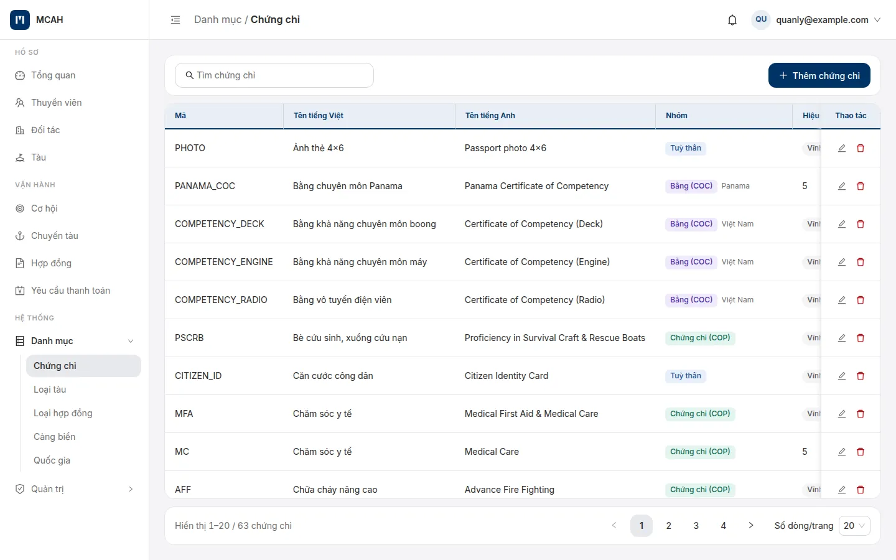
Tài khoản
Danh sách nhân viên có quyền đăng nhập, với vai trò và trạng thái Chờ kích hoạt hoặc Hoạt động.
- Thêm tài khoản: nhập email, họ tên, chọn vai trò. App gửi thư mời; người nhận tự đặt mật khẩu. Tài khoản chờ kích hoạt gửi lại thư mời được.
- Sửa tài khoản để đổi họ tên hoặc vai trò.
- Muốn tạm chặn một người: tắt Đăng nhập thay vì xoá. Xoá thì người đó không đăng nhập được nữa.
Vai trò và quyền
- + Thêm vai trò: đặt tên, mô tả, có thể sao chép quyền từ một vai trò đã có.
- Tích quyền trong cột của vai trò. Ô tìm kiếm lọc quyền theo chữ, ví dụ "duyệt"; Thu gọn tất cả chỉ để lại tên mục.
- Với mục có phạm vi dữ liệu, chọn Tất cả hoặc Do mình tạo ở dòng tên mục.
- Bấm Lưu thay đổi. Ô đã sửa nhưng chưa lưu có viền riêng để dễ soát.
Vai trò Quản trị viên luôn có mọi quyền và không sửa được. Chỉ Quản trị viên được sửa vai trò và quyền.
Mục tiêu tháng
Ở Quản trị → Mục tiêu tháng, chọn tháng, nhập số hợp đồng và doanh thu USD cho từng môi giới viên rồi lưu. Chép từ tháng trước điền nhanh các ô đang trống. Mục tiêu công ty là tổng mục tiêu của mọi người, và là mốc để Tổng quan báo Đúng tiến độ hay Chậm tiến độ.
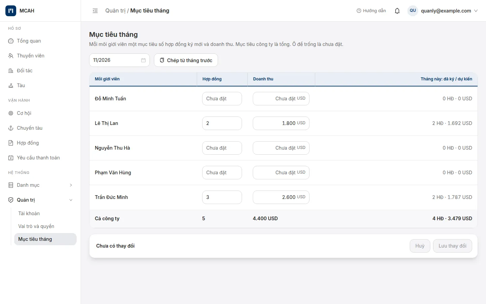
Ứng dụng trên máy tính
MCAH cài trên máy tính Windows hoặc Ubuntu như một phần mềm bình thường. Dữ liệu của văn phòng nằm ngay trên máy, không cần mạng để làm việc hằng ngày. Các màn và cách dùng giống hệt bản trên trình duyệt; mục này chỉ nói những chỗ khác.
Mở app
- Mở MCAH từ danh sách ứng dụng của máy. Lần đầu mất vài giây để chuẩn bị dữ liệu.
- App đã mở rồi thì bấm lại biểu tượng chỉ đưa cửa sổ lên trước, không mở thêm cửa sổ.
- App báo MCAH chưa mở được thì bấm Thử lại. Vẫn lỗi thì xem ổ đĩa còn chỗ trống, rồi gửi mã lỗi trên màn cho bộ phận hỗ trợ.
Gửi hồ sơ cho chủ tàu bằng app mail của bạn
Ở cơ hội, Gửi chủ tàu mở hộp soạn thư như thường. Bấm Mở trong app mail: app mail trên máy (Outlook hoặc Thunderbird) mở một thư mới đã điền người nhận, tiêu đề, nội dung và tự đính kèm hồ sơ từng ứng viên. Bạn xem lại, thêm tệp nếu cần, rồi bấm Gửi trong app mail. Thư đi từ chính email của bạn.
Quay lại MCAH, chọn Đã gửi để ghi lần gửi vào cơ hội. Chưa gửi thì chọn Chưa gửi.
Máy chưa có app mail: MCAH mở thư mục chứa hồ sơ để bạn kéo vào thư (ví dụ Gmail trên trình duyệt). Muốn lần sau tự đính kèm thì bấm Cài Thunderbird; người dùng Gmail chọn "Đăng nhập bằng Google" khi thêm tài khoản vào Thunderbird.
Cài đặt trên máy này
Bấm tên của bạn ở góc phải → Cài đặt trên máy này. Cài đặt chỉ áp dụng cho máy đang dùng.
- Mở bằng app mail trên máy (mặc định khi máy có Outlook hoặc Thunderbird).
- Gửi thẳng từ app: khai email và mật khẩu ứng dụng của email (Gmail, Outlook tạo trong phần bảo mật tài khoản), bấm Gửi thử cho tôi để kiểm. Mật khẩu được cất trong két mật khẩu của máy.
Xuất PDF
Xuất PDF cần thành phần miễn phí LibreOffice. Máy chưa có thì lần đầu bấm tải PDF, MCAH hỏi Cần cài thành phần xuất PDF: bấm Cài ngay, nhập mật khẩu quản trị của máy khi được hỏi, chờ vài phút. Cài xong MCAH tự tải tiếp tệp PDF bạn vừa bấm. Trong lúc chờ bạn vẫn tải Excel được.
Thông báo
Giấy tờ, chứng chỉ, hợp đồng sắp hết hạn được báo bằng thông báo của máy (góc màn hình), kể cả khi cửa sổ MCAH đang thu nhỏ. Bấm vào thông báo để mở đúng hồ sơ. Máy tắt qua đêm thì sáng mở app, MCAH tự kiểm và báo bù.
Tạo tài khoản cho đồng nghiệp
Quản trị → Tài khoản → tạo tài khoản như thường. Bản máy tính chưa gửi thư mời: sau khi tạo, bấm Mở trang đặt mật khẩu và để người đó đặt mật khẩu ngay trên máy, rồi đăng nhập.
Tài khoản và đăng nhập (ứng dụng trên máy tính)
Đăng nhập
Bấm Đăng nhập qua trình duyệt. Trình duyệt mở trang đăng nhập MCAH: đăng nhập bằng email và mật khẩu, hoặc Tiếp tục với Google. Xong, trình duyệt báo "Đã đăng nhập" và MCAH tự vào. Ứng dụng không bao giờ hỏi mật khẩu của bạn.
Chưa có tài khoản thì chọn Đăng ký trên trang đó và bấm liên kết trong thư xác minh. Quên mật khẩu thì đặt lại ngay trên trang đó.
MCAH không tự vào sau khi đăng nhập? Trang "Đã đăng nhập" có một mã 8 ký tự: trong MCAH bấm Nhập mã thủ công và dán mã vào.
Lần đầu: tạo văn phòng
Người đầu tiên của văn phòng chọn Tạo văn phòng mới trên máy sẽ giữ dữ liệu (máy chính, nên là máy bàn luôn bật). Bạn đặt tên văn phòng, đặt mật khẩu sao lưu và nhận mã khôi phục dữ liệu.
In hoặc chép mã khôi phục ra giấy và cất kỹ. Khi chuyển dữ liệu sang máy khác, bạn cần mật khẩu sao lưu hoặc mã này. Mất cả hai thì không mở được tài liệu, bên MCAH cũng không mở được.
Mã PIN và tự khoá
Sau lần đăng nhập đầu trên một máy, bạn đặt mã PIN 6 số. Để máy một lúc (mặc định 15 phút) MCAH tự khoá; nhập PIN để mở, không cần internet. Sai PIN 5 lần thì phải đăng nhập lại qua trình duyệt. Đổi thời gian tự khoá ở Cài đặt trên máy này.
Không có internet
Đã đăng nhập thì bạn làm việc bình thường tới 7 ngày không có internet. Còn 2 ngày, MCAH hiện dải vàng nhắc kết nối. Quá 7 ngày phải kết nối internet và đăng nhập lại. Quét giấy tờ bằng AI, tra tàu theo IMO và tìm danh mục tàu luôn cần internet.
Mời đồng nghiệp
Quản trị vào Quản trị → Tài khoản → Mời, nhập email, họ tên và vai trò. Đồng nghiệp nhận thư mời của MCAH, bấm liên kết để đăng ký, rồi đăng nhập MCAH. Tắt "Đăng nhập" của một người thì người đó không vào được nữa, kể cả đang mở ứng dụng.
Dùng trên điện thoại
Trên điện thoại, MCAH dùng cùng tài khoản và cùng dữ liệu như máy tính. Mở Safari (iPhone) hoặc Chrome (Android), vào địa chỉ MCAH của công ty và đăng nhập. Màn hình được sắp lại cho vừa một tay; việc làm được thì giống hệt máy tính.
Menu
Nút ☰ góc trên bên trái mở ngăn kéo menu. Đáy ngăn kéo có email, Hướng dẫn sử dụng và Đăng xuất. Dòng ‹ trên đầu trang chi tiết đưa về trang trước.
Tìm và lọc
Ô tìm và nút Bộ lọc dính trên đầu khi cuộn. Bộ lọc trượt lên từ đáy; bấm "Xem n …" để đóng và xem kết quả. Tab trạng thái là hàng nút tròn có số đếm, vuốt ngang để xem hết.
Thẻ trong danh sách
Mỗi dòng là một thẻ, mọi thông tin có nhãn nhỏ phía trên. Dải đỏ là đã quá hạn, dải cam là sắp tới hạn. Nút ở chân thẻ là việc nên làm tiếp (Duyệt, Ghi rời tàu, Ghi nhận đã thu…), chỉ hiện khi bạn có quyền.
Thêm mới và nút ⋯
Nút tròn + ở góc dưới bên phải mở form thêm mới. Đầu trang chi tiết chỉ hiện việc hay làm nhất; việc còn lại trong nút ⋯. Hộp hỏi lại trượt lên từ đáy.
Gọi, nhắn, Zalo
Cạnh số điện thoại trong hồ sơ thuyền viên và đối tác có nút gọi, nhắn SMS, mở Zalo (cần đã cài Zalo) và sao chép.
Điền form
Ô ngày mở bảng chọn ngày của máy, ô số tiền mở bàn phím số. Thanh lưu ở đáy. Đang nhập dở mà rời trang, app hỏi "Rời trang này?".
Duyệt trên điện thoại: ở trang chi tiết yêu cầu thanh toán, bấm Duyệt là duyệt luôn, không hỏi lại; nhầm thì ⋯ → Bỏ duyệt (khi chưa đánh dấu đã gửi). Trên thẻ danh sách, Duyệt có hỏi xác nhận một bước. Việc dài như tải nhiều giấy tờ hay ghi rời tàu nhiều người thì làm trên máy tính nhanh hơn.
Thêm MCAH ra màn hình chính
iPhone (Safari)
Mở MCAH và đăng nhập → nút Chia sẻ (ô vuông có mũi tên lên) → Thêm vào MH chính → Thêm.
Android (Chrome)
Mở MCAH và đăng nhập → ⋮ góc trên bên phải → Thêm vào màn hình chính (có máy ghi Cài đặt ứng dụng) → xác nhận.
Biểu tượng trên màn hình chính chỉ là lối tắt mở nhanh, không cần tải từ App Store hay CH Play. Vẫn cần có mạng.
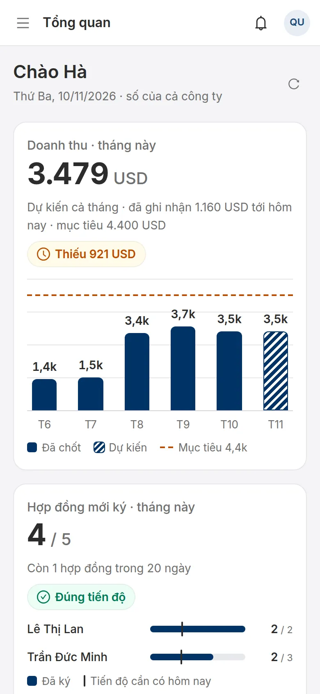
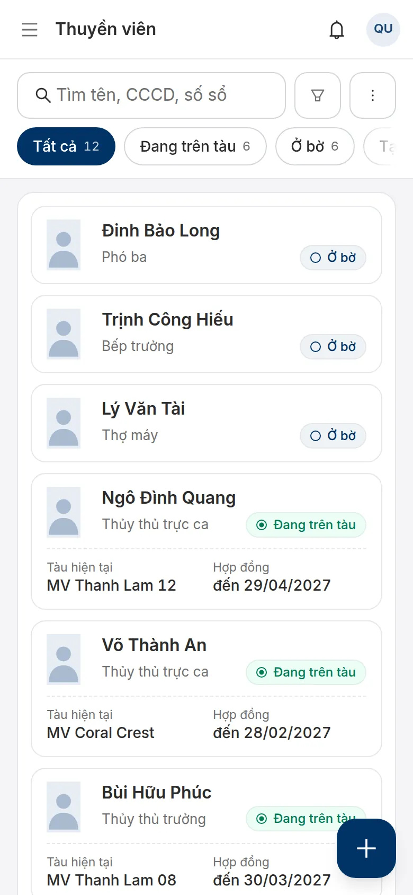
Hỏi đáp
Tôi không thấy một mục trên menu?
Vai trò của bạn chưa có quyền xem mục đó. Báo quản trị viên cấp quyền ở Vai trò và quyền; quyền mới có hiệu lực khi tải lại trang.
AI đọc sai một ô thì sao?
AI chỉ điền sẵn. Bạn sửa ô đó trước khi lưu. Ô AI không đọc được thì để trống để bạn nhập.
Thuyền viên rời tàu sớm, tiền có tự đổi không?
Không. Ghi rời tàu chỉ đổi chuyến. Muốn tiền khớp ngày rời, đưa hợp đồng về Nháp, sửa ngày kết thúc rồi duyệt lại (mục Rời tàu, sửa và kết thúc hợp đồng).
Thuyền viên chuyển thẳng sang tàu khác?
Ghi rời tàu chuyến cũ với ngày chuyển, rồi chốt người đó vào cơ hội của tàu mới hoặc tạo chuyến tay. Rút ngắn hoặc kết thúc hợp đồng cũ trước, nếu không chuyến mới sẽ không tự có hợp đồng vì trùng thời gian.
Giữa chừng tăng lương thì sao?
Đưa hợp đồng về Nháp, sửa số tiền, duyệt lại. Các kỳ đã có không đổi: mở từng kỳ còn chưa duyệt để sửa tay theo số mới.
Lỡ ghi sai ngày xuống tàu?
Sửa trên chuyến bằng "Sửa ngày đã ghi"; việc này không đụng hợp đồng. Nếu ngày bắt đầu hợp đồng cũng sai thì sửa hợp đồng; đổi ngày bắt đầu cần mọi kỳ còn chưa duyệt.
Bấm nhầm Kết thúc hợp đồng?
Hợp đồng đã kết thúc không mở lại được trên giao diện. Báo quản trị viên.
Vì sao tôi không duyệt được yêu cầu thanh toán vừa sửa?
Người duyệt phải khác người sửa gần nhất. Nhờ một người khác có quyền duyệt.
Vì sao doanh thu tháng này cao hơn số đã thu?
Số to trên Tổng quan là dự kiến cả tháng theo các hợp đồng đang có. Số đã thu thực tế xem ở Yêu cầu thanh toán.
Đầu tháng thấy nhiều người đỏ, có sao không?
Vạch tiến độ đi dần theo ngày, nên đầu tháng chưa ký hợp đồng nào vẫn chưa đỏ. Đỏ là thực sự đang chậm so với số ngày đã qua.
Xoá nhầm giấy tờ có lấy lại được không?
Giấy bị xoá là xoá mềm và tệp còn giữ 180 ngày. Báo quản trị viên để khôi phục.
Đăng nhập trên điện thoại có làm máy tính bị đăng xuất không?
Không, dùng cùng lúc được. Dùng xong trên máy lạ thì nhớ Đăng xuất.
Trang hiển thị lạ trên máy của tôi?
Chụp màn hình, ghi tên máy và trình duyệt (ví dụ iPhone 13, Safari) rồi gửi người quản lý MCAH của công ty.